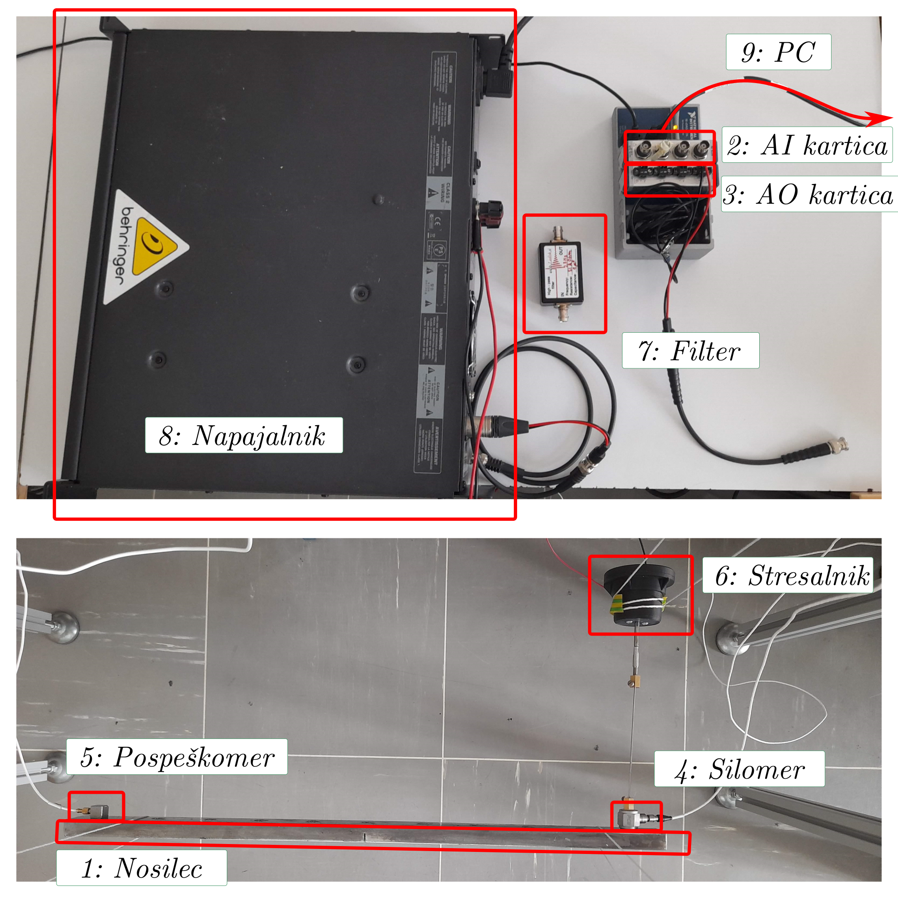

Show code cell source
import numpy as np
from scipy import signal
import matplotlib.pyplot as plt
Naključno vzbujanje - zajem signalov#
Spomnimo se:
Note
Frekvenčna prenosna funkcija \(\alpha(\omega)\) predstavlja razmerje med (kompleksnimi) amplitudami harmonskega odziva in vzbujanja opazovanega sistema:
Zajem signalov za določitev prenosnih funkcij z naključnim vzbujanjem#
Določamo razmerje med odzivom sistema in znanim signalom vzbujanja, na podlagi izmerjenih signalov \(x(t)\), \(f(t)\) pri naključnemu, širokospektralnemu, stacionarnemu vzbujanju.
Namen te vaje je spoznati laboratorijsko opremo in izvesti meritve signalov, potrebnih za določitev prenosnih funkcij mehanskega LTI sistema.
Naloga#
Naloga: Meritev signalov za določitev prenosnih funkcij jeklenega nosilca
Pripravite zajemni sistem in opravite meritve odziva (pospeška) jeklenega nosilca na naključno vzbujanje.
Vsak naj izvede meritev odziva (pospeška) nosilca v točki, podani v tabeli podatkov, ki jo najdete v e-učilnici.
Strukturo vzbujamo z naključnim širokospektralnim profilom z uporabo elektrodinamskega stresalnika preko povezovalne palice (stingerja), v pripravljeni točki \(0\).
Delo v laboratoriju bo potekalo skupinsko. Nalogo sestavljajo trije vsebinski deli, ki so podrobneje opisani spodaj:
Postavitev in povezava merilne opreme.
Priprava NI MAX + Python programa za generiranje in zajem signalov.
Meritev signalov vzbujevalne sile in odziva sistema v različnih točkah pri naključnem vzbujanju.
Merilni sistem#
Merilna veriga je sestavljena iz naslednjih komponent:
Jeklen nosilec:
Dolžina: 500 mm.
11 označenih merilnih mest (na pozicijah \([25, 475]\) mm, razmik \(45\) mm).
Vzbujanje na lokaciji \(0\), meritve odziva na lokacijah \(i \in [1, 2, \dots 10]\).
Zajemna (AI) kartica NI 9234:
4 analogni vhodni kanali (BNC priključek).
\(\pm\) 5 V.
Frekvenca vzorčenja do 51200 Hz (dovoljene vrednosti: \(51200 / n\), \(n \in [1, 2, 3, \dots, 31]\)).
24-bitna ločljivost.
Vzbujevalna (AO) kartica NI 9263:
4 analogni izhodni kanali.
\(\pm\) 10 V.
Frekvenca vzorčenja do 100 000 Hz.
16-bitna ločljivost.
Silomer PCB 208C01:
IEPE silomer.
BNC povezava z analognim vhodom merilne kartice.
Merilno območje: \(\pm\) 4.4 N.
Občutljivost: podatek na škatli instrumenta.
Pospeškomer PCB 333B30:
IEPE pospeškomer.
BNC povezava z analognim vhodom merilne kartice.
Merilno območje: \(\pm\) 490 \(m/s^2\).
Občutljivost: podatek na škatli instrumenta.
Elektrodinamski stresalnik.
Povezava s strukturo preko povezovalne palice (stingerja).
Analogni visokoprepustni filter.
frekvenca odreza: 2.8 Hz
preprečuje napajanje navitja stresalnika z DC napetostjo
AC Ojačevalnik analognega signala.
največja dopustna vhodna napetost: \(\pm 1\) V (ustrezno nastavite največjo napetost izhodnega kanala AO kartice!)
V izogib poškodbam merilne opreme pred meritvijo ojačanje napajalnika postavite na 0!
Ustrezno nastavitev ojačanja poiščite pred začetkom meritve.
Merilni osebni računalnik (USB povezava).
1. Postavitev merilne verige
Povežite merilno verigo zajemnega sistema. Pomagajte si z zgornjim opisom merilne opreme ter spodnjo sliko.
Pri povezavi merilnih zaznaval (pospeškomer, silomer) na merilno kartico lahko uporabite poljubne vhodne kanale. Poskrbite, da boste izbiro upoštevali pri nastavitvi opravil strojne opreme v aplikaciji NI MAX.

2. Priprava programa meritve
Meritev (generiranje signala vzbujanja in zajem) bomo krmilili v programskem jeziku Python, za komunikacijo z NI merilno opremo pa bomo uporabili paket PyDAQmx in vnaprej konfigurirana opravila (task-e) za upravljanje strojne opreme z aplikacijo National Instruments Automation explorer (NI MAX).
Preden lahko v Pythonu vzpostavimo povezavo z merilno opremo, moramo ustrezno konfigurirati opravila znotraj NI MAX.
V aplikaciji NI MAX sta že pripravljeni opravili za zajem (PS_random_input) in generiranje (PS_random_output) signalov.
Preverite, da nastavitve opravil ustrezajo predpisanim parametrom zajema in generiranja podatkov:
Glavne nastavitve zajema so:
Dva kanala: sila in pospešek (IEPE).
Frekvenca vzorčenja: 25600 Hz,
Trajanje vsakega zajetega segmenta: 2 s,
Kontinuirano zajemanje segmentov (
Continuous Samples),Število zajetih segmentov: 5.
(Pozor: vrednosti parametrov, prikazane na spodnjih slikah, se ne ujemajo nujno s podatki naloge.)
Glavne nastavitve generiranja so:
Ena kanal: napetost signala na stresalniku.
Število vzorcev v sekundi: 20000 Hz
Trajanje vsakega generiranega segmenta: 2 s,
Kontinuirano generiranje segmentov (
Continuous Samples).Profil naključnega vzbujevalnega signala konstantne amplitude na območju \([10, 3000] Hz\),
Povprečne amplitude vzbujevalne sile: 1 N RMS.
Python Program naj v zanki:
V zanki (za vsak zajeti segment):
Z uporabo paketa
PyDAQmxzajema kanale segmenta,Za vsak segment prikazuje graf zajetih signalov v času in PSD-ja signalov.
Po koncu meritve (ko so zajeti vsi segmenti):
Shrani zajete podatke v datoteko poljubnega formata.
Uporabite pripravljen Python program zajema. Po potrebi ga spremenite, da bodo parametri meritve ustrezali predpisanim (zgoraj).
Pozor: Vse nastavitve parametrov merilne opreme (nastavitev kanalov, občutljivost, frekvenca vzorčenja, enote, št. vzorcev v segmentu) nastavite v NI MAX task-u! V Python programu nastavite parametre, povezane z obdelavo signalov (št. zajetih segmentov, profil signala vzbujanja, shranjevanje podatkov v datoteke).
Meritev#
3. Izvedba meritve signalov
Vsak naj zajame predpisano število segmentov meritve odziva sistema v točki, predpisani v podatkih naloge.
Ker uporabljamo eno samo zaznavalo pospeška, je treba tega pred meritvijo namestiti na ustrezno merilno mesto. Za pritrditev uporabite majhno količino voščenega lepila.
Pred začetkom meritve nastavite ojačanje (gain) ojačevalnika signala tako, da boste v meritvi dosegli predpisano povprečno amplitudo sile (1 N RMS)! Preliminarno meritev začnite z ojačanjem 0, in tega ustrezno povečajte.
Ko ste ustrezno nastavili merilni sistem, NI MAX opravila in parametre Python programa, meritev poženete z zagonom funkcije IO_meritev() v poglavju “Meritev” Python programa.
Pri izvajanju meritve poskrbite, da:
je pospeškomer nameščen na ustrezno merilno mesto,
je največja amplituda generiranega signala v dopustnih mejah \(\pm 1\) V,
je ojačanje napajalnika nastavljeno tako, da vzbujate z ustrezno amplitudo sile,
ste zajeli ustrezno število segmentov meritve,
zajete podatke shranite tako, da jih boste lahko kasneje odpirali in obdelali v Pythonu.
Pozor!
Signale, zajete pri današnji vaji, boste potrebovali pri prihodnjih vajah in domači nalogi. Poskrbite, da ste podatke shranili v berljivi obliki in da boste naslednjič do njih imeli dostop.